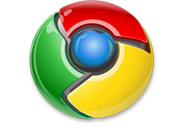

VORSICHT! Sie benutzen einen veralterten Browser — Internet Explorer 6
Diese Seite erstellt mit die fortschrittliche, moderne Technologie und nicht unterstützt den Internet Explorer Version 6.
Wir empfehlen Ihnen dringend und wählen Sie installieren einen modernen Browser. Es ist kostenlos und dauert nur wenige Minuten.
 |
 |
 |
 | |
| Internet Explorer | Opera Browser | Mozilla Firefox | Google Chrome | Apple Safari |
Warum muss man Browser IE6 aufzugeben?
Internet Explorer 6 ist nicht nur eine alte Browser-Version, es ist veralteten Browser. Er kann nicht alle Möglichkeiten der moderne Browseren bieten, und die Geschwindigkeit seiner Arbeit um ein Vielfaches niedriger! Internet Explorer 6 zeiget viel moderne Websites unrichtig an.
SicherheitIE6 Verwendung ist potenziellgefährlich, da Viren und Betrüger bekommen Zugriff auf Ihren Computer durch ihn. |
Nur TatsachenIE6 wurde im Jahr 2001veröffentlicht! Später wurden IE7 und IE8 veröffent. Freigabe der nächste Version den Internet Explorer erwartet in Kürze. |
MicrosoftMicrosoft ist Entwickler vonInternet Explorer 6. Und sie hat IE6 Unterstützung eingestellt und empfiehlt, dass Sie die neue Version des Browsers zu installieren. |